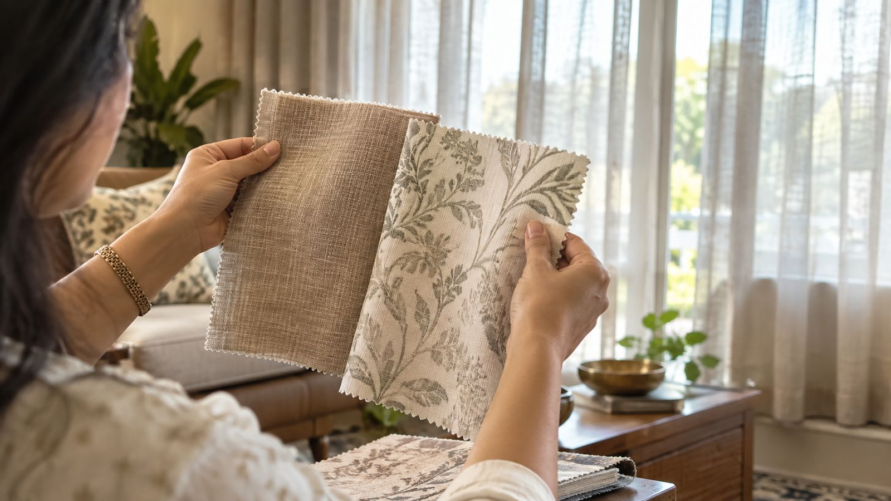
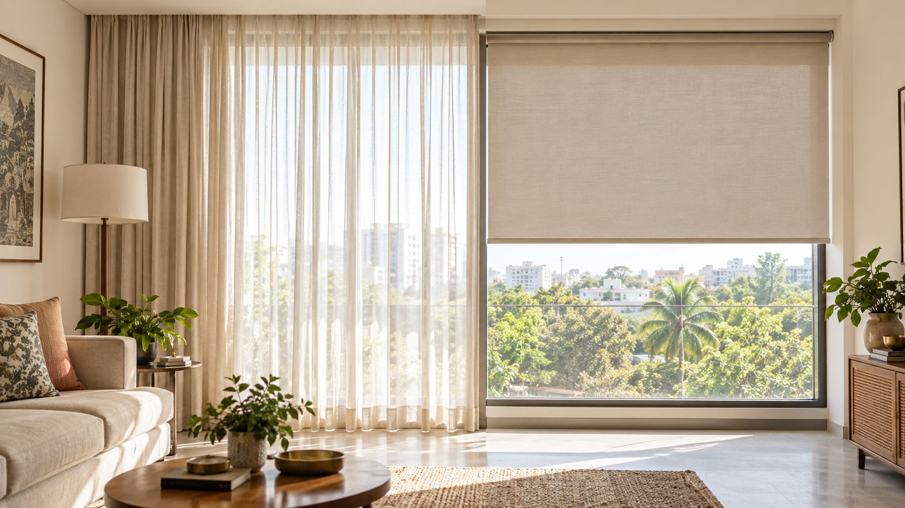
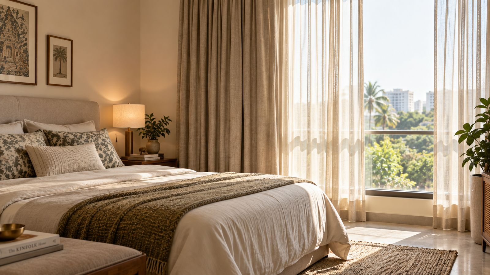
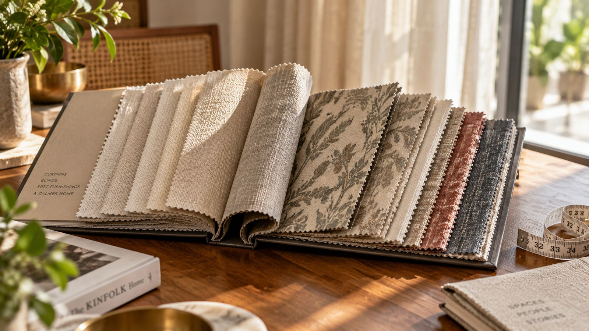

Inspiration
Ideas for better windows.
Useful starting points for choosing curtains, blinds, layers and light control for your home.

Why Choosing the Right Curtains Matters
A simple framework for choosing fabric, length and style for any room.

Curtains vs Blinds
A simple way to decide what suits a window, room and routine.

Best Window Coverings for Bedrooms
Privacy, darkness, softness and easy everyday control.

How Much Do Curtains Cost in Mysore?
Real fabric price ranges and what actually changes your quote.
Ready to bring one of these ideas home? Explore our curtains and blinds collections, or book a home visit to see fabrics and samples in your own space.
See what works in your room.
We'll bring the conversation home.
BOOK YOUR HOME VISIT →Free consultation · At your home · No obligation